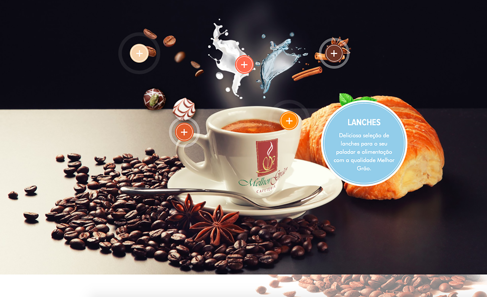

Renato Braga de Andrade
I don't divide my life between work and pleasure, problems are what inspire me.
Melhor Grão - Coffee
Melhor Grão has its crops located in the municipality of Bueno Brandão - South of Minas Gerais - the region with the highest arabica production in the world, composed entirely of hill coffee plantations with an altitude of 1300m and low air humidity, which guarantees the highest quality of the crops . We keep old varieties of coffee, such as Bourbon Amarelo, whose coffee plants produce the best coffees in Brazil and also have other varieties, such as Catuaí Amarelo - all of the Arabica species. In addition to the crop, Melhor Grão has several coffee kiosks around Rio de Janeiro.
Website
The website of Melhor Grão was created using Wordpress, parallax effects and several images, as it is a luxury cafeteria. In addition, the site features the full menu and posts from their social networks.
Social Media
The cafeteria's posts were also standardized on social networks, in addition to creating graphic guidelines, language styles and digital marketing promotions.